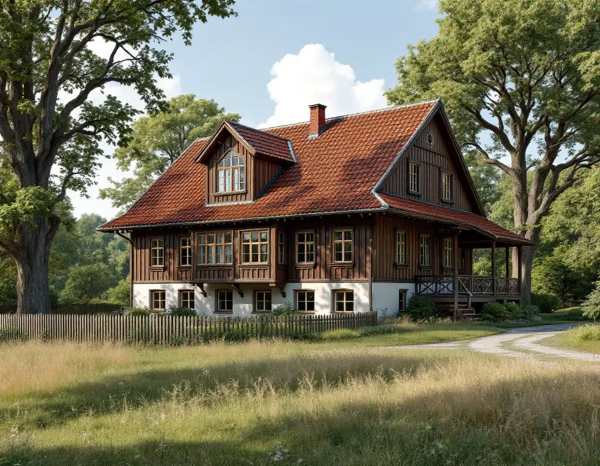
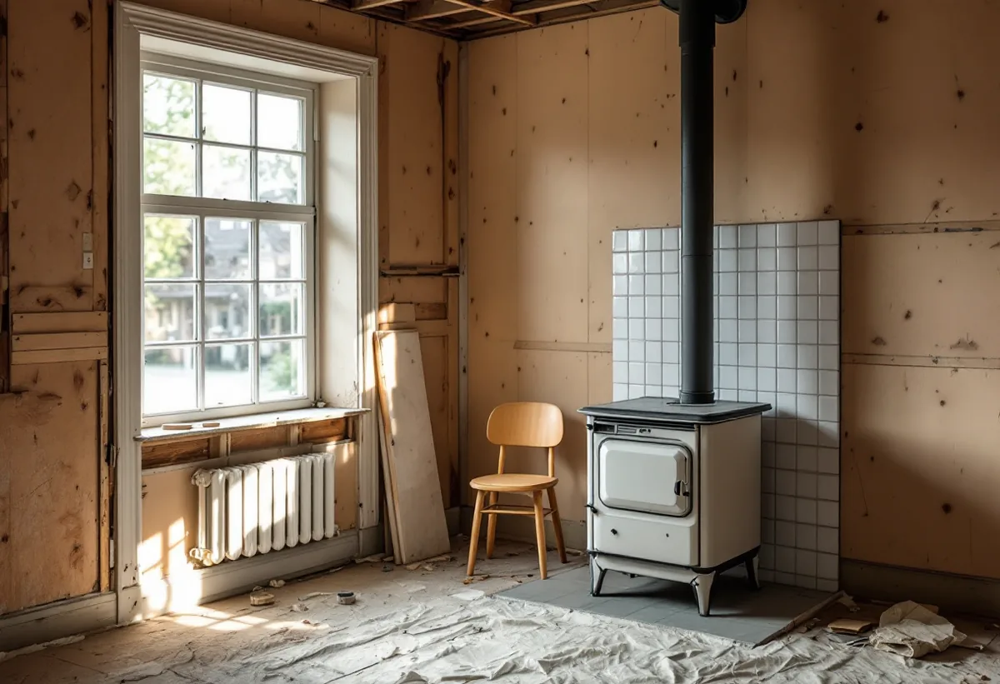
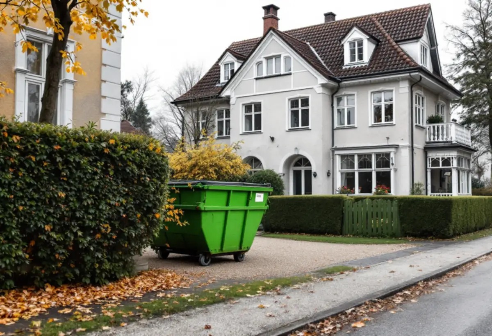

Platsbesök
Gratis besök där vi går igenom huset och tomten.
I Sundbyberg ligger Duvbo, Sveriges första egnahemsområde, där allt som syns utifrån har särskilda regler. Geal Entreprenad AB renoverar hela huset inifrån, håller det yttre som det är och tar hand om anmälan, lov och etablering.

Sundbybergs stad beskriver Duvbo som Sveriges första egnahemsområde. Riksantikvarieämbetet utsåg det till riksintresse 1987. Enligt stadens miljöprogram bildades föreningen Egna Hem 1898, köpte egendomen Dufvebol året därpå och lade ut en stadsplan med 325 tomter. 1924 utökades området västerut med ytterligare 98 villatomter.
Staden har särskilda regler för området och erbjuder ett kostnadsfritt konsultationsmöte med någon av stadens arkitekter inför större åtgärder som nybyggnad eller tillbyggnad. Planerar du en totalrenovering som också ändrar huset utvändigt är det ett bra första steg.

Detaljplanen för Duvbo har utökad lovplikt: bygglov krävs för åtgärder som påverkar byggnadens yttre utseende, och staden skriver att även solcellspaneler kräver lov. Byts fönster, dörrar, panel eller takmaterial i samband med renoveringen på ett sätt som påverkar utseendet behövs alltså bygglov.
Miljöprogrammet beskriver vad som ska tas hänsyn till. Sekelskiftesvillorna har fasader indelade i fält med stående och liggande spontpanel och snickarglädje, och tak i rött lertegel eller falsad plåt. 1920-talets villor har locklistpanel och enkla eller brutna sadeltak med rött lertegel, och husen från 1930- och 40-talen är slätputsade i ljusa kulörer. Träfasaderna målades ursprungligen med linoljefärg eller slamfärg. Vid en totalrenovering behåller vi därför det yttre och lägger kraften på planlösning, installationer och ytskikt inne.
Ska eldstaden användas igen efter renoveringen gäller stadens regler för eldstäder. Sundbybergs stad skriver att det krävs anmälan och startbesked för att installera eldstad, skorsten eller rökkanal, för att byta en insats om eldningsförhållandena ändras och för att byta eldstad om det innebär en ny anslutning till rökkanalen eller ett annat bränsle. En tyngre eldstad som kräver förstärkning av bärande delar kräver också anmälan.
En ny eller ändrad skorsten kan dessutom kräva bygglov som fasadändring, och i Duvbo påverkar den husets utseende. Staden råder att utformning och placering bestäms i samråd med skorstensfejarmästaren. Till ansökan hör fasad- och planritning, produktblad och kontrollplan.
En totalrenovering kräver plats för container och material. Staden skriver att byggetableringen bör stå på den egna fastigheten om det går. På någon annans mark behövs fastighetsägarens tillstånd, och ska den stå på stadens mark, till exempel gatu- eller parkmark, behövs tillstånd från polisen. Byggbodar, plank och i vissa fall containrar kan också kräva bygglov.
I Duvbo är tomterna stora och förgårdarna breda, så vi försöker placera containern på tomten. Där det inte går söker vi tillstånden i god tid. Enskilda rum beskriver vi under badrumsrenovering i Sundbyberg och köksrenovering i Sundbyberg.

Gratis besök där vi går igenom huset och tomten.
Vid utvändiga ändringar i Duvbo bokas stadens konsultationsmöte.
Bygglov för det yttre, anmälan för eldstad och installationer.
Container och bodar på tomten eller med polisens tillstånd.
Rivning, installationer och ytskikt i rätt ordning.
Gemensam genomgång och slutbesked där det krävs.
I ett småhus räknar Skatteverket bland annat rivning av väggar, ny planlösning, tilläggsisolering, kakel och klinker och andra förbättringsarbeten som rotarbete. Avdraget gäller arbetskostnaden, inte material och resor.
Avdraget är högst 30 procent av arbetskostnaden och högst 50 000 kronor per person och år. Äger ni bostaden två kan båda göra avdrag. Där avdraget gäller drar Geal det direkt på fakturan.
Hur mycket som byggs om inne, om eldstaden ska återställas, om det yttre kräver lov och särskilda material, och var containern kan stå. Efter ett gratis platsbesök får du ett skriftligt kostnadsförslag.
Renovera hela huset eller lägenheten.
Villarenovering →Takbyte, takbesiktning och plåtarbeten.
Takläggare i Sundbyberg →Rött lertegel och synliga taktassar i Duvbo.
Takrenovering i Sundbyberg →Duvbo, potten och medgivandena.
Attefallshus i Sundbyberg →Ventilationen, OVK och Duvbo.
Badrumsrenovering i Sundbyberg →Nytt hus, träd och regler i Duvbo.
Byggföretag i Sundbyberg →Puts och kulör i stadskärnan.
Fasadmålning i Sundbyberg →Panel och puts på Duvbos villor.
Fasadrenovering i Sundbyberg →Duvbo, flerbostadshusen och lovet.
Fönsterbyte i Sundbyberg →Egnahemsvillornas fönster i Duvbo.
Fönsterrenovering i Sundbyberg →Trägolv i äldre villor och nya golv.
Golvläggare i Sundbyberg →Ta bort färg och fernissa från gamla golv.
Golvslipning i Sundbyberg →Duvbos villor och stadens lägenhetskök.
Köksrenovering i Sundbyberg →Lamellhus, kulörbyte och bostadsrätt.
Målare i Sundbyberg →Duvbos tak, rännor och lov.
Plåtslagare i Sundbyberg →Altan, pergola och staket enligt stadens guide.
Snickare i Sundbyberg →Container, ställning och grannar.
Takbyte i Sundbyberg →Ny tapet i äldre lägenheter.
Tapetsering i Sundbyberg →Duvbo, träden och riktlinjerna.
Tillbyggnad i Sundbyberg →